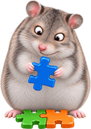
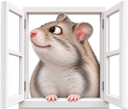

ChomikBox 2.0.8.2 - technical overview
ChomikBox is the Windows desktop client of chomikuj.pl, a Polish file-hosting service in which every account is a chomik (hamster) holding a tree of folders; the API calls the account id hamsterId. Version 2.0.8.2, released 2017-10-21, is a 32-bit Qt 4 / C++ application built with MSVC.
This site explains what the application is, how it is built, what each shipped component does and how it talks to the servers. It is the readable companion to two other outputs of the same project: an OpenAPI 3.2.1 description of the API and a PHP client with a PHPUnit test suite. Everything here comes from observing the installed application plus a small amount of careful live probing, and each claim is labelled with how it is known. Who know, maybe someone will be brave enough to create some new integrations of chomikuj.pl or... maybe even... a new chomikbox, one that we all deserve ;).
Start with the architecture at a glance, or jump to a topic in the contents.
Features - what the application does
ChomikBox sits in the system tray and can show a small side panel (the dock in the diagram; hidden at start by default) with three module tiles: upload, download and music. They label the first three cards below.
-

Upload (Dodawanie)
Drag files onto the uploader window or onto the desktop hamster, or use the Explorer verb Zachomikuj. Uploads are queued and resumable, JPEG photos can be scaled down, and the upload format carries thumbnails.
Observed
UploadToken, multipart!CHBupload,[uploader]keys. -
Download (Pobieranie)
A download manager with five parallel slots by default and a persistent queue. A new download opens an agreement window that explains each file's cost type (own file, small, free, education, transfer, points, already on disk) and how much transfer or how many points it will use.
Observed
Download,AgreementInfo,[downloader]. -

Music player (Muzyka)
Plays local files and files streamed from the service, keeps playlists on the account and a local cache (10 GiB default limit), reacts to media keys and can register itself as the default music player. Built on GStreamer 0.10 and ffmpeg.
Observed
SavePlaylist,player.audio,[player]. -
Folders
Browse the account's folder tree and manage it: create, rename, move by drag and drop, remove (optionally with contents) and change folder options such as password, hidden, adult and public.
Observed
Folders,AddFolder,MoveFolder,ModifyFolder. -

Screenshots
The uploader toolbar captures the whole desktop or a screen area and queues it for upload as JPG or PNG; the default quality is
good. There is also a clipboard upload button.Observed UI strings «Pulpit» / «Obszar ekranu»,
screenshot-format. -

Browser click-catching
The Click Catcher NPAPI plug-in claims the MIME types of downloadable files and hands the URL to ChomikBox (
-d<url>) instead of letting the browser download it. Current browsers no longer load NPAPI plug-ins;chomik://links still work.Observed
npcbplugin.dllInferred obsolete. -
Desktop companion
An animated hamster lives on the desktop and reacts to dragged files, music, screenshots and typing. Around it are the side panel, an animated tray icon, notification balloons and a first-run tutorial in seven language variants.
Observed 21 animation packages, 2,103 frames.
Architecture at a glance
One long-running GUI process, chomikbox.exe, does all the user-facing work and almost all the network traffic. Small helper executables take care of crash reporting, updates, offline settings and the one-off 1.x import. The Windows shell and the browser reach the running instance through a named pipe.
- 1Shell entry points (Explorer verbs
-u/-p,chomik://URLs, the browser plug-in's-d<url>, a second launch) reach a running instance over the named pipe\\.\pipe\qtsingleapp-Chomik-739b-<session>; with no instance running they simply startchomikbox.exewith that command line. - 2SOAP 1.1 over plain HTTP to the WCF service
http://box.chomikuj.pl/services/ChomikBoxService.svc: 18 operations, with the session token as the first element of nearly every request. - 3File transfers over HTTP to file servers named by the API: multipart uploads to
http://<server>/file/(multipart/mixed; boundary=!CHB<stamp>), the resume check/resume/check/?key=, andGETdownloads withRange; the music player streams from the same kind of URL. - 4Web pages opened in the browser: auto-login
LoginFromBox?t=…, buying transfer or points, feedback, registration, lost password. - 5Updates:
UUpdaterfetchespackages.xmlfrombts.box.chomikuj.pl/repo/dists, stages the packages and startsinstaller.exeelevated, which restarts ChomikBox with--update=success|failed. The repository answered 404/403 on 2026-10-24. - 6Crashes: the Breakpad handler writes a minidump and starts
crashsender.exe, which POSTs the dump, logs and configuration tohttp://bts.box.chomikuj.pl:8088/crash. - 7Settings, transfer queues, logs and the player cache live in
%LOCALAPPDATA%\ChomikBox\;configurator.exeandchomikbox1conf.exeedit the same folder while ChomikBox is not running.
More detail: Architecture (processes, layers, IPC) and Components (one section per executable and resource pack).
Key facts - stack and versions
- Product
- ChomikBox 2.0.8.2 by Chomikuj.pl (registry
InstallVersion=2.0.8.2; the SOAP client identifies itself aschomikbox/2.0.8.2). Observed - Build
- 32-bit PE executables built with MSVC, dated 2017-10-21. The MSI was built with MakeMSI on the same day and carries the MSVC90 CRT side-by-side merge modules. Observed
- UI and runtime
- Qt 4 (
QtCore4,QtGui4,QtNetwork4,QtXml4), QtSingleApplication for single-instance handling, Qt style sheets inside binary skin files. Observed - Media
- GStreamer 0.10 (plug-ins in
gplugins\) and ffmpeg for the music player. Observed - Other libraries
- Google Breakpad (minidumps), dbghelp (stack walking in every framework-based executable), libneon and gnutls (shipped; their use is not documented). Observed
- Main API
- SOAP 1.1 over HTTP to a WCF service with metadata publishing disabled (no WSDL); 18 operations; 17 verified against the live service (SessionBegin targets a host with no DNS record). Observed Live
- API document
- Two content-equivalent OpenAPI 3.2.1 documents generated from one source. The canonical one is strictly conformant: 19 operations, with SOAP as a single
POSTcarrying aSOAPActionenum of the 17 main-service actions. The per-operation view has 38 operations, one path item per SOAP operation, and declares its one deviation (a?op=server URL). Repository contains 142 captured cases, embedded as examples. API reference - Security
- 12 client findings (C-01 to C-12) and 14 service observations (S-01 to S-14). The most serious: plain HTTP everywhere, an unsalted MD5 as the credential, crash reports that carry
conf.ini, and updates fetched over HTTP, checked only by an unkeyed SHA-1 from the same channel and run elevated (C-07, High, needs a network position). Security & privacy - Install
- Per-machine MSI into
C:\Program Files (x86)\ChomikBox\; user data in%LOCALAPPDATA%\ChomikBox\. Observed - Languages
- Source strings are English;
pl.qmcarries 656 messages,en.qm670. Skins and the tutorial also have Italian, Spanish, Russian, Portuguese and Brazilian Portuguese variants. Observed - Brands
- One executable, several brands:
base.iniselects the domain. Overlays forchomikuj.pl,minhateca.com.brandlolabits.esare embedded, and the balloon skins name further white-label partners (Abelhas.pt, Toutbox, Tuttobox, Abra Sesamo). Observed
Servers - hosts and endpoints
Endpoints used by the client and listed in its default config. %1 stands for a value substituted at run time. All templates use plain http://.
| Host / URL template | Purpose | Used by | Status (2026-10-24) |
|---|---|---|---|
http://box.chomikuj.pl/services/ChomikBoxService.svc | Main SOAP API (IChomikBoxService) | chomikbox.exe | Up, behind Cloudflare, also answers over HTTPS; 17 of 18 operations verified Live |
http://%1/session on session.box.<domain> | Optional session server (SessionBegin), used only when [proto-webox] session-enabled = true (default false) | chomikbox.exe | Host has no DNS record Live |
http://<server>/file/, http://<server>/resume/check/?key=<key> | File upload and resume check; <server> comes from UploadToken | chomikbox.exe | Verified on upload servers sNNNN.chomikuj.pl:8084 Live |
http://sNNNN.chomikuj.pl/File.aspx?e=…&pv=… | Signed download and music-stream URLs returned by Download, FolderFiles and RefreshFileUrl | chomikbox.exe | Verified, Range supported Live |
http://music.%1/MusicFile.aspx?chomik_id={chomikid}&sess_id={sessid}&seed={seed}&id=%1&ext=.%2 | Not a request: an identifier written to the player cache for 1.x compatibility; the placeholders are never filled in | (none) | Gone: 404, music. host unreachable Live |
http://%1/chomik/chomikbox/LoginFromBox?t=%2&returnUrl=/ plus DodatkowyTransfer.aspx, DodatkowePunkty.aspx, ChomikBoxOpinia.aspx, http://www.%1/Create.aspx, http://www.%1/LostPassword.aspx | Web pages opened in the browser: auto-login with the session token, buying transfer or points, feedback, registration, lost password | browser, from chomikbox.exe | http://chomikuj.pl/chomik/chomikbox/LoginFromBox works and starts a web session Live |
http://bts.box.chomikuj.pl:8088/crash | Crash report upload | crashsender.exe | TCP open, empty reply to HEAD |
http://bts.box.%1/repo/dists, http://bts.box.%1/repo/beta/, http://download.box.%1/updates | Update repository and beta download link | chomikbox.exe (UUpdater) | 404 / 403: offline |
http://Chomikuj.pl/chomik/chomikbox/AppUninstalled | Page opened after uninstall | MSI custom action | Not probed |
The SOAP host is built as webservice-main-prefix (box.) plus the brand domain from base.ini, so a white-label build talks to box.<its domain>. Observed Brand overlays
Contents - all pages
- ArchitectureProcesses, Qt 4 application structure, the SOAP networking stack, the media stack, single-instance IPC, timers and the configuration system.

ComponentsEvery executable, plug-in and resource pack: purpose, how it is launched, inputs and outputs, interactions, evidence.
Windows integrationRegistry, thechomik://scheme, Explorer verbs, music file associations, named pipe, data folders, autostart, browser plug-in.- ConfigurationConfig files, the default config, the network, upload and download keys, brand overlays and
base.ini. - Security & privacyThe findings register: 12 client findings and 12 observations of the live service, each with a rating and evidence.
- ProtocolSOAPAction dispatch, envelopes and namespaces, gzip, the session lifecycle, status values, faults, retry, and the file-server endpoints, client vs live.
- FlowsSequence diagrams: login and keep-alive, folders, upload with resume, download with agreements, music, SavePlaylist, click-catching.
- API referenceAll 36 operations of the per-operation OpenAPI view: schemas as XML trees, every captured example, verification and security notes.
- PHP client & testsThe PHP 8.3 client, its Offline, Contract and Live suites, the live-test safety model and spec validation.
Sources and conventions
Evidence labels
Each claim on these pages is labelled with how it is known:
- Observed
- Read directly from the application, a resource, a registry key or an installer table, or seen in the behaviour of the client.
- Live
- Seen in traffic with the real service during the gentle, sandboxed probing of 2026-10-24.
- Inferred
- Reasoned from observed facts but not confirmed directly.
- Unknown
- Not determined. Listed so nobody mistakes a gap for a fact.
Project files
api/chomikbox.openapi.yamlandapi/README.md: the OpenAPI 3.2.1 document and its conventions;php/README.md: the PHP client and tests.- The images used on this site are mapped in
site/assets/img/README.md.
Rules followed on these pages
- No secrets: user names, e-mail addresses, password hashes, session or upload tokens and signed URLs never appear. Examples use placeholders such as
{{USERNAME}},{{PASS_HASH}}and{{TOKEN}}. - Polish UI terms are kept where they help, with an English gloss: Dodawanie (Upload), Pobieranie (Download), Muzyka (Music), Ustawienia (Settings).